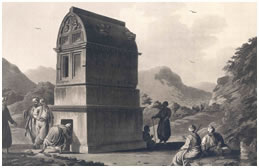
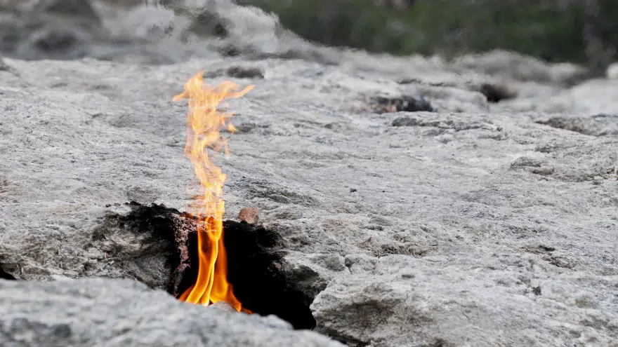
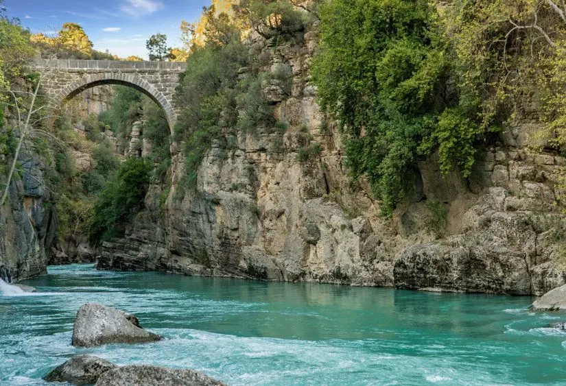
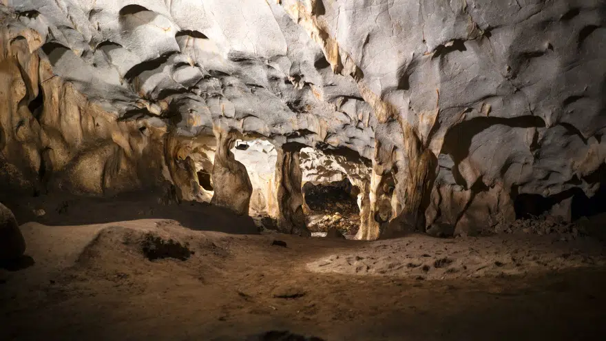
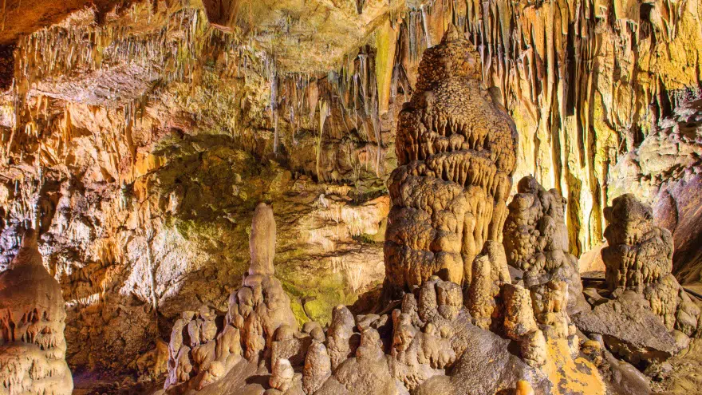
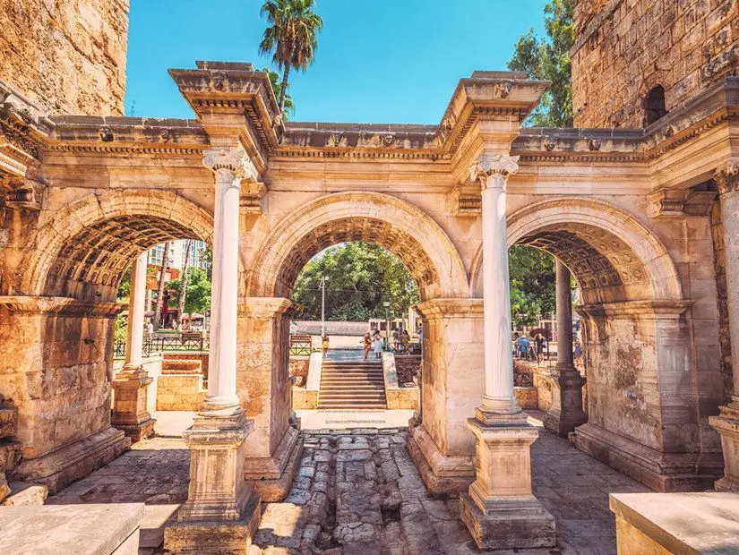
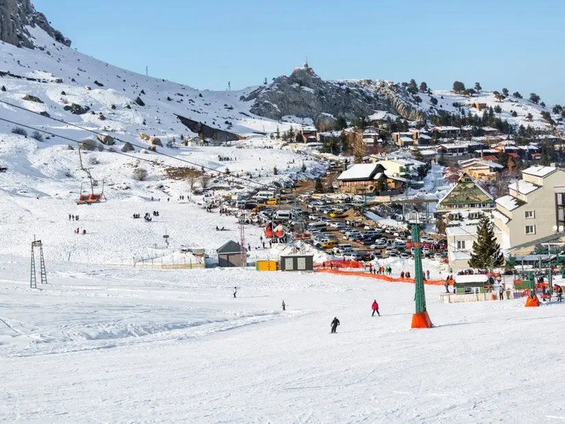
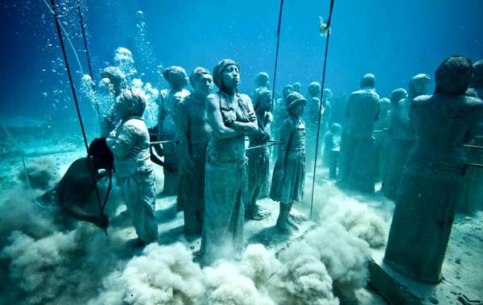
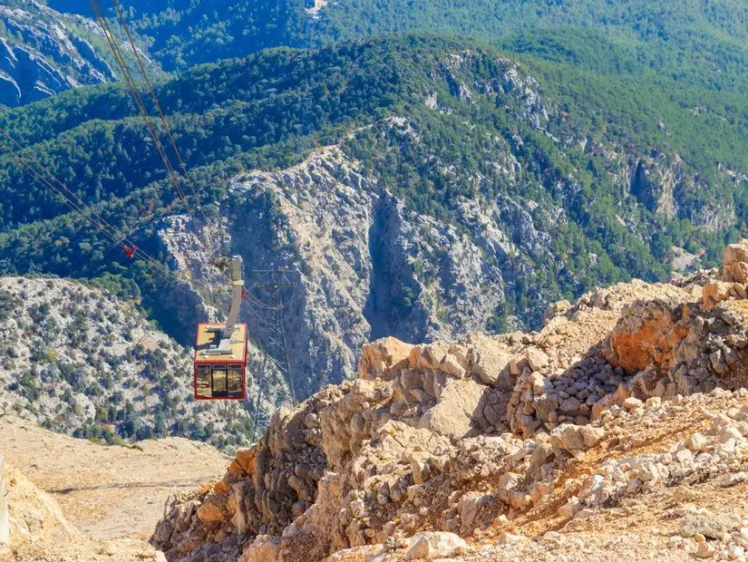

2 / 5

Saat Kulesi
Yüz ölçümü: 20.723 km²
Nüfus: 2.328.555
Tarihçe : "Attalos Yurdu" anlamına gelen Antalya, II. Attalos tarafından kurulmuştur. Bergama Krallığı’nın sona ermesiyle (M.Ö. 133) bir süre bağımsız kalan kent, daha sonra korsanların eline geçmiştir. M.Ö. 77’de Komutan Servilius Isauricus tarafından Roma topraklarına katılmıştır. M.Ö. 67’de Pompeius’un donanmasına üs olmuştur. M.S. 130’da Hadrianus’un Attaleia’yı ziyaret etmesi şehrin gelişmesini sağlamıştır. Bizans egemenliği sırasında piskoposluk merkezi olan ismi görülen Attaleia, Türklerin eline geçtikten sonra büyük bir gelişme göstermiştir. Modern şehir, antik yerleşmenin üzerine kurulduğundan, Antalya’da antik çağ kalıntılarına çok az rastlanmaktadır. Görülebilen kalıntıların ilki, eski liman olarak nitelenen liman mendireğinin bir kısmı ve limanı çevreleyen surdur. Surların park dışındaki kısmında restorasyonu yapılan Hadrian Kapısı Antalya’nın en güzel antik eserlerinden biridir.
Antalya şehri ve çevresine antik çağda, “çok verimli” anlamına gelen Pamphylia, Batı kesimine ise Lykia denirdi. Milattan önce VIII. yüzyıldan itibaren buraya Ege denizinin Batı kıyılarından göçenler; Aspendos ve Side gibi şehirleri kurmuşlardır. II. yüzyıl ortalarında hüküm süren Bergama Kralı II. Attalos, Side’yi kuşatmıştı. Antalya’nın yaklaşık 75 km. doğusundaki Side’yi alamayan kral, şimdiki il merkezinin olduğu yere gelerek bir şehir kurdu. Buraya onun adı verilerek Attaleia dendi. Zaman içinde Atalia, Adalya diyenler oldu. Antalya, onun adından gelmektedir.
Yapılan arkeolojik kazılarda Antalya ve bölgesinde, günümüzden 40 bin yıl önce insanların yaşadığı ispat edilmiştir. Milattan önce 2000 yılından bu yana bölge, sırasıyla; Hitit, Pamphylia, Lykia, Kilikya gibi kent devletlerinin ve Pers, Büyük İskender ile onun devamı sayılan Antigonos, Ptolemais, Selevkos, Bergama Krallığı’nın idaresine girmiştir. Daha sonra Roma Devleti, hüküm sürmüştür. Antalya’nın antik çağdaki adı Pamphylia idi ve burada kurulan şehirler bilhassa II. ve III. yüzyılda altın çağını yaşadı. V. yüzyıla doğru da eski ihtişamını kaybetti.
Yöre Doğu Roma ya da Türkiye’de tanınan adıyla Bizanslıların hâkimiyeti altındayken, 1207’de Selçuklular tarafından, Türk topraklarına katıldı. Anadolu Beylikleri devrinde ise Teke Aşiretinin bir kolu olan Hamitoğulları’nın egemenliğine girdi. Teke Türkmenleri, Türklerin eski yurdu bugünkü Türkmenistan’da da nüfus olarak en büyük boylardan biridir. XI. yüzyılda bir kısmı buraya gelmiştir. Bugün Antalya’nın kuzeyi ile Isparta ve Burdur’un bir kısmı olan Göller Bölgesinin, bir adı da Teke yöresidir. Osmanlılar zamanında Anadolu eyaletine bağlı Teke sancağının merkezi, şimdiki Antalya il merkeziydi. O yıllarda buraya Teke sancağı denirdi. İlin şimdiki adı ise aslında antik çağdaki adının biraz değişmiş şeklidir ve Cumhuriyet döneminde verilmiştir
XVII. yüzyılın ikinci yarısında Antalya’ya gelen ünlü Osmanlı seyyahı Evliya Çelebi, kale içinde dört mahalle ve üç bin ev, kale dışında 24 mahallesi olduğunu belirtir. Şehrin çarşısı ise kale dışındaymış. Evliya Çelebi’ye göre limanı, 200 parçalık gemi alacak büyüklüktedir. İdarî bakımdan Konya’ya bağlı Teke Sancağı’nın merkezi olan Antalya, Osmanlı imparatorluğunun son yıllarında bağımsız sancak haline getirildi.
Kaleiçi yerli ve yabancı turistler tarafından ziyaret edilen en popüler yerlerden biridir. Antalya'da tatil yapmayı planlıyorsanız gezmeniz gereken yerlerden birisi ilk olarak burası olmalıdır. Burada yer alan ve Osmanlı döneminden kalma restore edilmiş evler oldukça ilgi çekidir.

Tarihi dokusuyla dikkat çeken yerlerden birisi olan Olympos, antik çağlarda Likyalıların en önemli kentlerinden birisiydi. Daha sonra Roma hakimiyetine geçen bölge bir dönem ise Osmanlı hakimiyetinde kalmıştır. Bu bölge bugünlerde ise plajıyla ünlü bir yerdir.

Yanartaş, Olympos vadisinin yakınlarında yer alan bir yerdir. Bu bölge adını dağlık taraftaki kayalarda bulunan deliklerde yer alan alevlerden alır. Alevlerin hemen altında ise demirci rolüyle bilinen Yunan tanrısı Hephaestus'un tapınağı vardır.
Köprülü Kanyon, Isparta'da başlayan ve Akdeniz'e dökülen nehir üzerinde yer alan bir bölgedir. Nehrin üzerinde Büğrüm Köprü ve Oluk Köprü olarak bilinen Roma dönemine ait iki köprü vardır. Köprülü Kanyon özellike rafting yapmak isteyenler için Akdeniz'in en uygun yerlerinden birisidir.
Karain Mağarası, Türkiye'nin en büyük doğal mağaraları arasında yer alır. Mağara antik çağlar dahil olmak üzere insanlar tarihine ışık tutan yerlerden biridir. Bu mağarayı ziyaret ederken buradan çıkarılmış olan buluntuların incelenebileceği Karain Müzesi ziyaret edilmelidir.
1948 yılında taş ocağı açılırken kazara keşfedilen Damlataş Mağarası, hem Antalya'nın hem de Alanya'nın en önemli turistik değerlerinden biri haline geldi. Türkiye'nin turizme açılan ilk mağarası olmasıyla ünlü Damlataş Mağarası, Akdeniz'in sevilen plajlarından biri olan Damlataş Plajı'nın arka tarafında Alanya Kalesi'nin batı bölümünde yer alıyor.
Antalya merkezinden kolayca ulaşabileceğiniz doğa harikalarından biri olan Düden Şelalesi, merkeze sadece 10 kilometre uzaklıktaki Kepez ilçesinde yer alıyor. Halk arasında Düdenbaşı Şelalesi olarak da bilinen Düden Şelalesi; seyir terasları, ahşap yürüyüş yolları, kafeler, restoranlar ve çay bahçeleriyle özellikle yaz aylarında çok popüler bir gezi alanı. 2 kola ayrılan Düden Şelalesi’nin suları 9 kilometre daha devam ederek Antalya'nın falezlerinden 40 metre yükseklikten Akdeniz'e dökülerek muhteşem bir manzara oluşturuyor.

Antalya’ya 165 kilometre, Kaş'a ise sadece 35 kilometre uzaklıktaki küçük Kekova Adası, batık şehir olarak da biliniyor ve sahilindeki su altı kalıntıları ile dünya çapında bir ünlü sahip. Antalya’dan teknelerle kolayca ulaşabileceğiniz Kekova; tepe yamaçlarına dizilmiş tarihi evleri, cam berraklığındaki denizi ve sahilindeki antik kent kalıntılarıyla yerli ve yabancı turistleri büyülüyor. Antalya’nın incilerinden biri olan Kekova’da M.S. 100 yıllarında yaşanan deprem ve tsunami ile denizin altına gömülen antik kentin kalıntıları koruma altında olduğu için bölgede yüzmeye izin verilmiyor. Ancak oldukça yakınından geçen tekne turları sayesinde antik kenti görmeniz mümkün. Dilerseniz Kekova'da yüzmek için Tersane Koyu'nu tercih edebilirsiniz.

Antalya'da düzenlenen doğa gezileri ve rafting turlarının en popüler adreslerinden olan Manavgat Şelalesi, Antalya merkezine sadece 76 kilometre uzaklıkta ve otobüsle bir saatte ulaşabileceğin bir tabiatı cenneti. Şehrin turistik ilçelerinden Manavgat'a 3 kilometre uzaklıktaki Manavgat Şelalesi, yemyeşil ormanlar arasında kilometreler boyunca uzanıyor ve büyüleyici bir manzaraya sahip.

Antalya merkezine sadece 22 kilometre uzaklıkta yer alan ve bölgenin en çok ziyaret edilen doğal güzelliklerinden biri olan Kurşunlu Şelalesi, çevresini saran zengin bitki çeşitliliği ile tabiat parkı ilan edilerek koruma altına alındı. Haftanın her günü 08:00 ile 20:00 saatleri arasında ziyaret edilebileceğiniz Kurşunlu Şelalesi, 33 hektarlık geniş bir alanı kapsıyor. Onlarca çeşit ağaç arasında 18 metre yükseklikten dökülen bembeyaz sularıyla her mevsim büyüleyici doğa manzaraları sunan Kurşunlu Şelalesi, yaz aylarında buz gibi sularında serinleyebileceğiniz 7 tane minik şelaleler ve kaya göletine de sahip

Antalya’nın en popüler turistik ilçesi Alanya'nın simgesi olan görkemli Alanya Kalesi, Akdeniz’e hakim bir tepede bütün ihtişamıyla yükseliyor. Deniz seviyesinden 250 yükseklikteki bir yarımadanın zirvesine inşa edilmiş kale, 10 hektar gibi geniş bir alanı kapsıyor. 6,5 kilometre toplam uzunluğa sahip surlarıyla büyüleyici bir manzara sunan Alanya Kalesi, 13. yüzyılda Selçuklu Sultanı I. Alaeddin Keykubad tarafından inşa ettirilmiş bir mimari şaheser. Denizden gelecek saldırılara karşı Akdeniz’e hakim bir noktaya inşa edilen kale, Bizans ve Osmanlı dönemlerinde de kullanılmış, ayrıca uzun bir süre korsanların işgalinde kalmış.

Alanya Kalesi’nden sonra Alanya’nın en popüler turistik gezi alanı ve tarihi simgesi olan Kızıl Kule, çok etkileyici bir Selçuklu dönemi eseri. 1226 yılında Selçuklu Sultanı I. Alaeddin Keykubad tarafından inşa ettirilen Kızıl Kule, dikdörtgen şekliyle klasik Selçuklu mimarisini yansıtıyor. 12,5 metrelik surlarla çevrili 33 metre yükseklikteki kule, 5 kattan oluşuyor ve 85 taş basamakla Kızıl Kule’nin zirvesine çıkarak Alanya'nın muhteşem panoramik manzaraların izleyebilirsiniz. Deniz kenarında saldırılara karşı koruma amacıyla tasarlanan kule o kadar sağlam inşa edilmiş ki günümüze kadar bozulmadan kalmayı başarabilmiş. 1. katında Alanya Etnografya Müzesi’nin hizmet verdiği Kızıl Kule’den manzarayı izledikten sonra olarak müzenin zengin koleksiyonlarını da inceleyebilirsiniz.

Antalya’nın en ilginç müzelerinden biri olan ve her yıl binlerce turist tarafından ziyaret edilen Sandland Antalya Kum Heykel Müzesi, dünyaca ünlü Lara Plajı’nda yer alıyor ve Antalya’yı gezerken mutlaka uğramanız gereken yerlerden biri. Her yıl değişen temasıyla, metrelerce büyüklükte yüzlerce kumdan heykelin arasında unutulmaz bir gezi yapabileceğiniz açık hava müzesi, aynı zamanda dünyanın en büyük kum heykel alanlarından birine ev sahipliği yapıyor.

Köprülü Kanyon Milli Parkı sınırları içerisinde yer alan başka bir etkileyici doğa harikası da Tazı Kanyonu. Antalya merkezine 105 kilometre uzaklıkta yer alan kanyon, 200 ile 400 metre yükseklikteki kanyon uçurumları ve yemyeşil manzarasıyla Antalya'nın mutlaka keşfetmesi gereken bir tabiat harikası.

Antalya'nın tarihi kent bölgesini çevreleyen surların antik kapısı olan Hadrianus Kapısı, Antalya'nın tam ortasında yer alıyor ve Kaleiçi'ne bir giriş kapısı görevi görüyor. Halk arasında Mermer Kapı olarak da bilinen ve M.Ö. 130 yılında Roma İmparatorluğu tarafından yaptırılan 3 gözlü Hadrianus Kapısı, Korint tarzında devasa mermer sütunlarla inşa edilen etkileyici bir tarihi eser ve Antalya merkezindeki en çok ziyaret edilen yerlerinden biri.
Antalya; mavi bayraklı plajları, sıcak havası ve her zaman güneşli olması ile ünlü bir şehir ama Antalya’da kış aylarında muhteşem deniz manzaraları eşliğinde kayak yapmanız da mümkün. Toros Dağları'nın Beydağları bölümünde yer alan Saklıkent Kayak Merkezi, Akdeniz Bölgesi'ndeki en büyük ve en popüler kayak merkezi konumunda. Dağın kuzey yamacında inşa edilen kayak otelleri ve dağ evleriyle kış sezonunda çok hareketli olan Saklıkent Kayak Merkezi, aynı zamanda dünyanın ekvatora en yakın kayak merkezi biri olmasıyla da ünlü.
Türkiye'nin tek su altı müzesi olan ve 2015 yılında ziyarete açılan Side Sualtı Müzesi, her yıl on binlerce kişi tarafından ziyaret ediliyor. Meksika’da bulunan müzeden sonra dünyanın en büyük ikinci su altı müzesi olmasıyla ünlü Side Sualtı Müzesi'nin zengin koleksiyonları, rengarenk onlarca çeşit balık eşliğinde dalışlar yapılarak gezilebiliyor. Müzede 177 tane etkileyici heykel, batık gemiler, antik hazineler, top mermileri, sikkeler, çeşitli batıklardan çıkarılan birbirinden ilginç eserler arasında yüzebilir ve benzersiz fotoğraflar çekebilirsiniz. Hafta içi her gün 09:00 ile 14:00 saatleri arasında Side Sualtı Müzesi’ni ziyaret edebilir ve profesyonel dalgıçlar ile birlikte dalış yaparak da müze koleksiyonlarını gezebilirsiniz.
Antalya merkezine 61 kilometre uzaklıkta yer alan Olympos Teleferik, 10 dakika içinde Tahtalı Dağı’nda 2000 metre yüksekliğine kadar çıkıyor ve yeşil ile mavinin buluştuğu Akdeniz sahilini gözler önüne seriyor. Toros Dağları'nın en yüksek noktalarından olan Tahtalı Dağı’nda 2000 metreden fazla yüksekliğe kadar ulaşan Olympos Teleferik, her biri 80 kişilik özel kabinlere sahip. Olimpos Milli Parkı içindeki istasyonundan binebileceğiniz teleferikle dağ zirvesine ulaşırken Antalya’nın muhteşem doğasını keyifle izleyebilir, sarp kayalıklar ve çam ormanlarının üstünde unutulmaz bir yolculuk yapabilirsiniz. Antalya ve Kemer otellerinin turlar düzenlediği Olympos Teleferik’e isterseniz kendiniz de kolayca ulaşabilir ve hem Antalya hem de Akdeniz’in muhteşem kuş bakışı manzaralarını izleyebilirsiniz.
 Adrasan Koyu
Antalya'nın Kumluca ilçesinde yer almaktadır. Çavuşköy olarak da bilinen Adrasan adı, Yunanca
Erdassa adından gelmektedir. Adrasan Körfezi, Türkiye'nin güney kıyısının 2,5 km'den fazla bir uzunluğuna uzanır. Koyda,
daha küçük köy ve mezraların yanı sıra Adrasan kasabası bulunmaktadır.
Saat Kulesi
Antalya gezilecek yerler listesinin tarihi yapıları arasında bulunan Saat Kulesi Kaleiçi Cumhuriyet Caddesi’nde ziyaretçileri
selamlıyor.
II.Abdülhamit için 20. yüzyılın başında inşa edildiği tahmin edilen kule şehir merkezi ile bütünleşmiş sembolik bir eser.
Burası özellikle Yivli Minare ve Hadrianus Kapısı ile beraber şehrin en önemli 3 tarihi yapısı arasında gösteriliyor.
Yerden yüksekliği 14 metre olan saat kulesinin zamanla eski saatleri de elektronik olanlar ile değiştirilmiş. Kale Kapı
mevkiine doğru giderseniz saat kulesini de görebilirsiniz.
Hıdırlık Kulesi
Alt kısmının kare üst bölümünün ise silindir şeklinde olması ile oldukça ilgi çeken Hıdırlık Kulesi 2. yüzyılda Antalya
surlarının üzerine inşa edilmiş. Karaalioğlu Parkı’nda bulunuyor.
Kesin bir bilgi olmasa da kuleyi Roma İmparatoru Hadriyanus’un yaptırdığı söyleniyor. Hıdırlık Kulesi zamanında bir gözetleme
yeri ve deniz feneri olarak kullanılmış. Alt kısmının ise mezar odası olduğuna dair bazı kanıtlar bulunuyor.
Akşam saatlerindeki ışıklandırılmış silüeti ve genel dokusu ile Antalya ile oldukça uyumlu görünen kule günümüzde bazı
etkinliklere ev sahipliği yapıyor.
Falezler
Turizmin başkenti Antalya'nın iki büyük plajı Lara ve Konyaaltı arasındaki falezler, doğal güzelliğiyle de görsel bir
şölen sunuyor. Asırlardır dalgaların çarpması sonucu oluşan ve "yalı yar" olarak da adlandırılan Falezler bölgesi,
turizmin yeni cazibe merkezlerinden biri oldu.
Mini City
Minyatür eserlere meraklı olanlar için Antalya’nın en güzel yerlerinden biri Minicity. Tematik park aynı zamanda çocuklu
ailelerin de gözdeleri arasında bulunuyor.
Peki, Minicity’de neler var? Alanda Anadolu uygarlıklarının en seçkin eserlerinin ve bazı büyük mimari yapıların minyatür
halleri yer alıyor. Özellikle tarih boyunca çok farklı dönemlerde yapılmış birçok eser sizi geçmiş dönemlere doğru yolculuğa
çıkaracak. Ayrıca 63.000 metrekarelik parkta çocuk alanı da var.